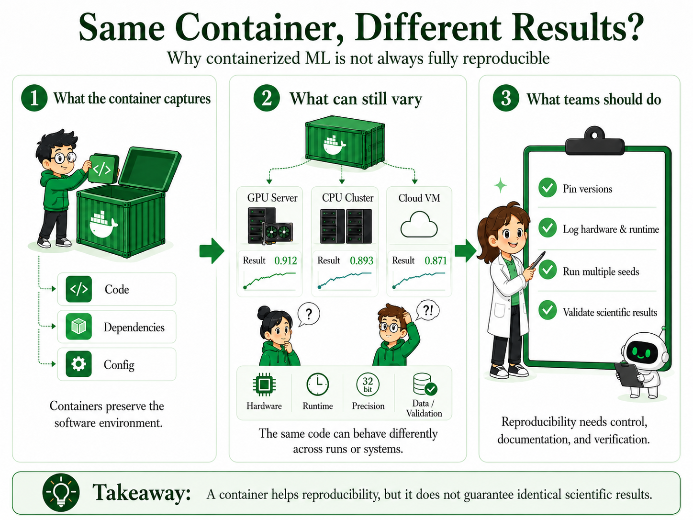
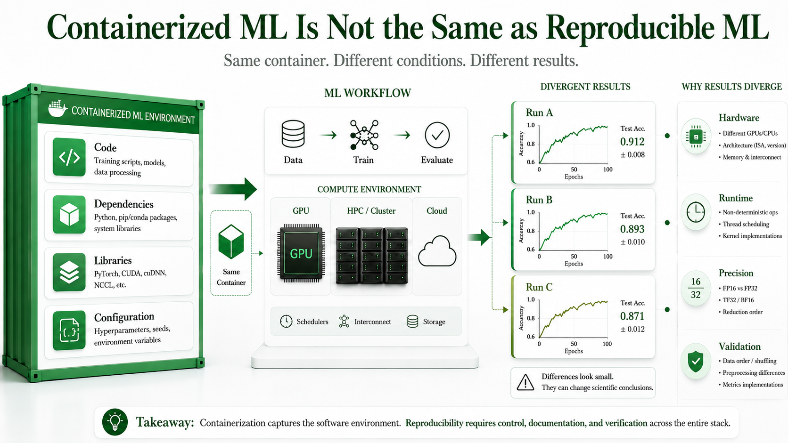

The Core Problem
Containerization has become one of the most useful practices in modern machine learning and scientific computing. Docker, Singularity, and Apptainer help researchers package code, libraries, and runtime environments so that experiments are easier to move across laptops, institutional clusters, cloud systems, and HPC environments. A 2021 analysis of reproducibility practices across ML research found environment specification to be among the most impactful interventions teams can adopt.[1]
That is a major improvement over the problem of results that only work on the original developer's machine. But there is an important distinction that often gets blurred in how teams talk about reproducibility.
For research teams working with deep learning, physics informed models, simulation workflows, or large-scale HPC systems, this distinction matters practically. Two experiments can use the same code, the same container image, and the same dataset, yet still produce different results because numerical behavior, hardware execution, runtime library choices, and workflow decisions may not be fully controlled by the container.[2]
What Containers Do Well
Containers are genuinely valuable because they make software environments more portable and easier to inspect. They help teams preserve package versions, system libraries, directory structure, configuration files, runtime dependencies, and the basic execution environment in a form that can be shared and rerun.
For many engineering workflows, that is sufficient to make deployment more predictable. A web service, a data pipeline, or a build system running in a container today will almost certainly behave the same way next year. The software is the product, and the container captures the software.
Scientific machine learning is different. A scientific result depends not only on what software was installed, but also on how the computation was executed. That execution depends on hardware, floating-point precision settings, parallel execution order, choices made by GPU library algorithms at runtime, random seeds, data preprocessing decisions, and the validation methodology used to assess whether the result is correct. The Turing Way handbook describes this as the difference between computational reproducibility and scientific reproducibility.[3]

ldd inspection.Same Environment Is Not Always the Same Result
A container answers one question well: can someone run this code in a similar software environment? Scientific reproducibility requires more. It asks whether the result remains stable across repeated runs, whether it holds across hardware platforms, and whether small numerical differences change the scientific conclusion.[4]
In deep learning, small numerical differences can sometimes accumulate during optimization. In many cases the final answer may still be scientifically consistent. In other cases, differences in precision, GPU kernels, reduction order, or nondeterministic operations affect convergence behavior, evaluation metrics, or model selection. Henderson et al. documented this effect across reinforcement learning benchmarks, finding that seemingly minor implementation choices produced result variance that obscured genuine algorithmic differences.[5]
Where Reproducibility Can Still Break
1. Dependency specifications may be incomplete
A Dockerfile or container recipe may appear precise while still leaving important details unresolved: base image digest, cuDNN point release, cuBLAS or NCCL version, compiler options, GPU architecture flags, and transitive Python dependencies. A container built from the same Dockerfile six months apart may not behave identically for numerical workloads. PyTorch's own documentation acknowledges that fully deterministic behavior requires explicit opt-in at multiple levels.[6]
2. GPU libraries make runtime decisions
Modern GPU libraries are optimized heavily for performance. cuDNN may choose different convolution algorithms dynamically based on tensor shapes, available memory, device architecture, workspace memory limits, and benchmarking settings. Different low-level execution paths may be mathematically equivalent in exact arithmetic, but floating-point arithmetic is not exact. The same operation executed in different order produces a different result.
3. Floating-point differences accumulate
Floating-point arithmetic is not associative or commutative in finite precision. The result of summing a large set of numbers depends on the order of operations, the data type in use, hardware implementation details, and how parallel reductions are structured. Bouthillier et al. measured result variance attributable solely to these low-level numerical factors across standard ML benchmarks and found it to be meaningful at the level of published comparisons.[2]
4. Workflow provenance is often undocumented
Reproducibility is not only about rerunning the final training script. Scientific workflows involve iterative exploration: data cleaning decisions, feature engineering choices, failed experiments that shaped the final approach, hyperparameter search history, and threshold decisions used to select among candidate results. Dodge et al. argue that reporting only final numbers without documenting the search process misleads readers about the robustness of the result.[7]
A Practical Checklist
The following steps move substantially closer to reproducible scientific ML without requiring bitwise determinism as the target standard. Adapted from the NeurIPS reproducibility guidelines and the Turing Way reproducibility handbook.[1][3]
- Use immutable container image digests rather than floating tags like
:latest. - Pin direct and transitive Python dependencies using a lock file.
- Record CUDA, cuDNN, cuBLAS, NCCL, compiler, and driver versions explicitly at runtime startup.
- Record GPU model, compute capability, memory configuration, and driver version in experiment logs.
- Save full runtime environment logs at the beginning of each experiment run.
- Document precision settings (FP32, TF32, BF16, FP16) and whether deterministic mode is enabled.
- Run experiments across more than one random seed before making publication-quality claims.
- Validate not only predictive accuracy but also domain consistency where a ground truth exists.
- Archive intermediate checkpoints, not only the final model weights.
- Record the data preprocessing and feature engineering decisions that preceded the final run.
Three Useful Levels of Reproducibility
Not every project needs the same rigor. A useful framework distinguishes three targets, matched to the context and stakes of the work.[1]
The Physics Informed Case
The reproducibility problem takes on additional significance for physics informed models, where outputs are not only evaluated by predictive accuracy but also by whether they satisfy governing physical constraints. A model that converges differently across environments may produce outputs that pass accuracy metrics while failing physically meaningful tests of domain consistency.
Research on physical validity instability in containerized scientific machine learning has found that cuDNN version mismatches, detectable only by inspecting shared library linkage via ldd rather than inspecting image manifests, can produce large swings in physics constraint compliance across environments that appear identical at the container layer. This illustrates a class of reproducibility failure that standard container inspection tools cannot surface.
For any model where outputs are expected to satisfy physical laws, domain consistency validation needs to be part of the reproducibility evaluation. A model that reproduces its accuracy metric is not the same as a model that reproduces its science.
The Path Forward
Perfect bitwise reproducibility is not a realistic target for modern ML systems operating at scale, and it is not the right target. The goal is robust scientific reproducibility: results that are stable enough, documented enough, and validated enough for others to build on with confidence.
That goal requires treating the software environment, the hardware environment, the workflow decisions, and the domain validation as joint objects of documentation and control. Containers handle the first. The other three require deliberate practice that containerization alone does not supply.
The research community has made substantial progress on tooling for experiment tracking, workflow provenance, and environment specification. Tools like MLflow, DVC, and Weights and Biases address parts of the problem. The gap is not primarily technical. It is the habit of treating reproducibility as a property of the container rather than a property of the entire scientific process.
References
- [1] Pineau, J., Vincent-Lamarre, P., Sinha, K., Larivière, V., Beygelzimer, A., d'Alché-Buc, F., Fox, E., & Larochelle, H. (2021). Improving Reproducibility in Machine Learning Research. Journal of Machine Learning Research, 22(164), 1–20. Open access: jmlr.org/papers/v22/20-1364.html
- [2] Bouthillier, X., Delaunay, P., Bronzi, M., Trofimov, A., Nichyporuk, B., Szeto, J., Mohammadi Sepahvand, N., Raff, E., Madan, K., Voleti, V., Kahou, S. E., Michalski, V., Serdyuk, D., Arbel, T., Pal, C., Varoquaux, G., & Vincent, P. (2021). Accounting for Variance in Machine Learning Benchmarks. Proceedings of Machine Learning and Systems (MLSys), 3. Preprint: arxiv.org/abs/2103.03673
- [3] The Turing Way Community. (2022). The Turing Way: A Handbook for Reproducible, Ethical and Collaborative Research. Zenodo. Available at: the-turing-way.netlify.app/reproducible-research
- [4] Gundersen, O. E., & Kjensmo, S. (2018). State of the Art: Reproducibility in Artificial Intelligence. Proceedings of the AAAI Conference on Artificial Intelligence, 32(1). Available via AAAI: ojs.aaai.org/index.php/AAAI/article/view/11503
- [5] Henderson, P., Islam, R., Bachman, P., Pineau, J., Precup, D., & Meger, D. (2018). Deep Reinforcement Learning That Matters. Proceedings of AAAI 2018. Preprint: arxiv.org/abs/1709.06560
- [6] PyTorch Team. (2024). Reproducibility. PyTorch Documentation. pytorch.org/docs/stable/notes/randomness.html
- [7] Dodge, J., Gururangan, S., Card, D., Schwartz, R., & Smith, N. A. (2019). Show Your Work: Improved Reporting of Experimental Results. EMNLP-IJCNLP 2019. Preprint: arxiv.org/abs/1909.03004